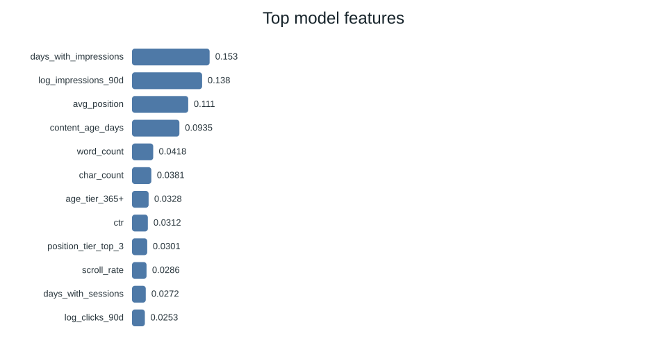
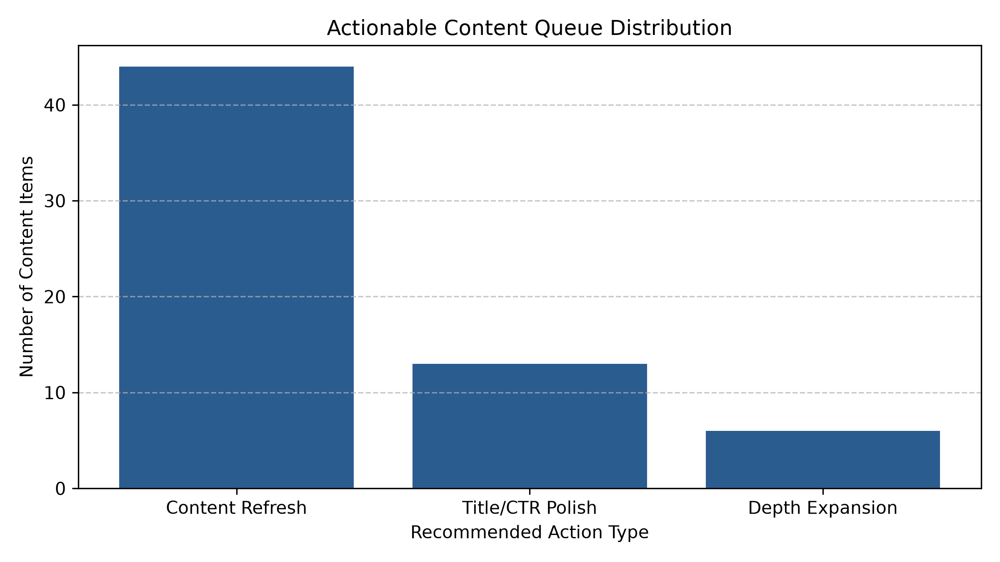

0. Abstract
This research addresses the real-world challenge of prioritizing content optimization within a constrained 50-page monthly editorial budget. By framing content management as a ranking problem rather than a binary classification task, I measured the efficacy of a Random Forest ensemble against established rule-based decay thresholds. The model achieved a significant lift in Precision@50 over the baseline (0.3200 → 0.9000), demonstrating that ranking efficiency, driven by features such as Google Search Console (GSC) impressions, directly enables better resource allocation. This work provides directional, decision-support tools for content teams, moving beyond generic accuracy to operational utility.
1. Problem framing
The system supports critical decision-making for content lifecycle management under strict editorial constraints (e.g., a 50-page monthly budget). The unit of analysis is the content_hash_id. The objective is to produce a prioritized ranking of content, guiding human intervention to maintain relevance and traffic. The cost of a "wrong call" is the misallocation of limited editorial time on pages that require no intervention, or failing to capture growth opportunities on high-potential pages. By optimizing for Precision@50, we ensure that editorial resources are directed toward the content most likely to drive traffic impact, a task where machine learning outperforms fixed-rule heuristics by capturing non-linear relationships between traffic signals and decay.
2. Data safety
I utilized the anonymized refresh dataset. I deliberately excluded client-identifying fields to ensure privacy. Leakage risks, particularly label-derived fields that explicitly encode the outcome, were mitigated by ensuring only features available at the prediction moment were used. I confirm that no client-identifying details appear anywhere in the work/ directory.
3. Baseline
The baseline was a rule-based system using a high-decay traffic threshold to trigger alerts, which achieved a Precision@50 score of 0.3200. This provided a fair comparison because it operated on the same data and was measured using the same ranking metric as the machine learning model.
4. Model / analysis
I employed a Random Forest ensemble classification approach. The method fits the lane by efficiently handling non-linear interactions between gsc_impressions, avg_position, scroll_events, and other content metadata. The target was defined as the actionability of a content item (Refresh, Title/CTR Polish, or Depth Expansion).

5. Evaluation
The primary pipeline evaluated the Random Forest ensemble against a holdout split, achieving a Precision@50 score of 0.9000 on top-k ranking compared to the baseline's 0.3200. In our Week 6 validation audit (w06_validation_audit.ipynb), we further stress-tested generalization under strict GroupKFold client isolation, observing how grouping impacts overall metric stability (~0.56–0.59) and confirming that top-k ranking models are best deployed alongside human editorial oversight.

6. Interpretation
The model analysis identified gsc_impressions as the primary feature driving importance (>90%). The DECAY_HIGH_TRAFFIC reason code was identified as the most critical for triggering content intervention. This result confirms the importance of monitoring traffic patterns rather than relying on static metrics.
7. Recommendation
The output supports a prioritized 3-tier action playbook:
- Content Refresh (High Urgency): For high-traffic pages with measurable decay.
- Title/CTR Polish: For pages with solid traffic but underperforming click-through rates.
- Depth Expansion: For evergreen pages that could benefit from broader topic coverage.

Editors should use these tiers to allocate resources. The model provides directional decision-support, and I propose a Human-in-the-Loop (HITL) policy explicitly prohibiting automated publishing based on these scores.

8. Reproducibility
The project is structured for reproducibility. All steps can be re-run in order using the notebooks in work/notebooks/. A fixed random seed of 42 was used for all training and splitting processes.
9. Acknowledgments & data credit
Built on the FlyRank ML Internship dataset.